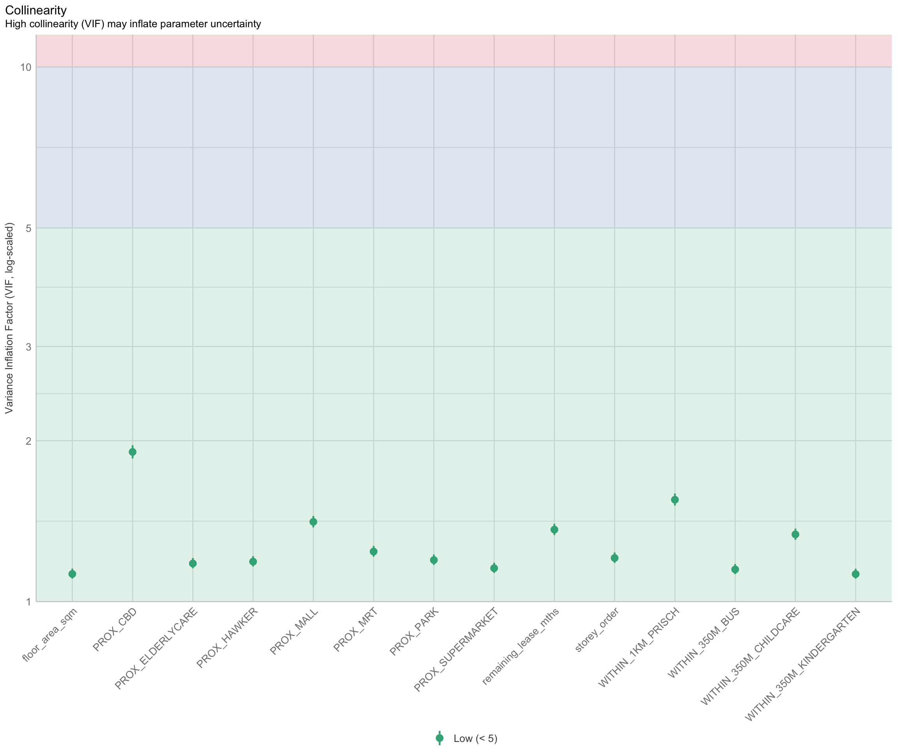
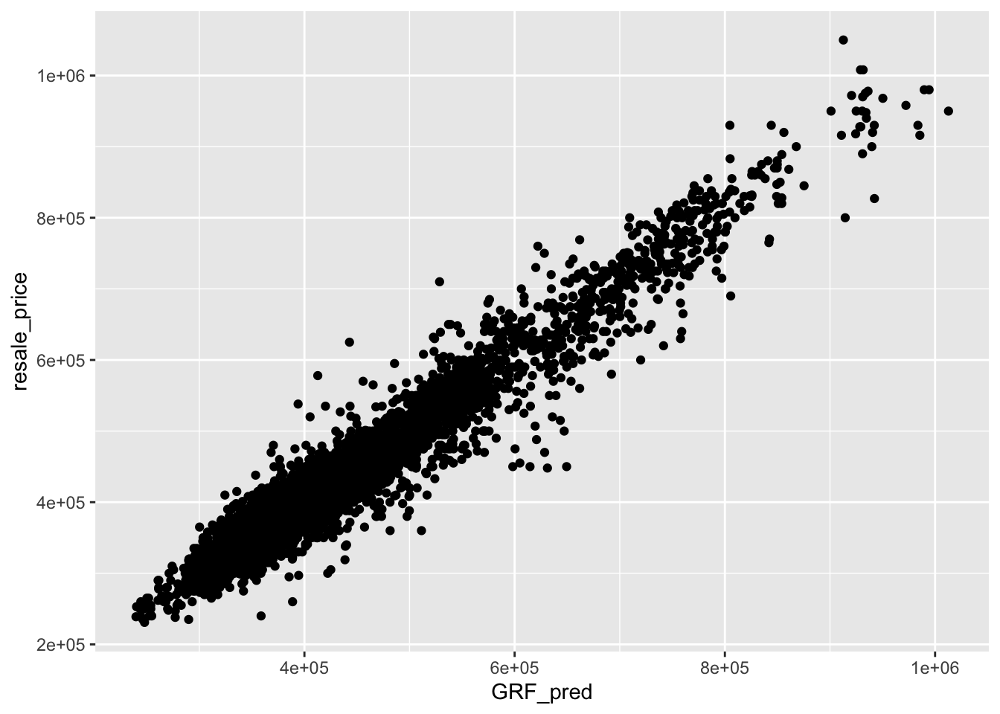

pacman::p_load(tidyverse, sf, httr, jsonlite, rvest)In-Class Exercise 8
In this exercise, we will go through a sample exercise for Take-Home Exercise 3B and In-Class Exercise 08, which supplement what we have learnt in Hands-On Exercise 8.
1 Exercise Reference
2 Overview
In this exercise, we will go through a sample exercise for Take-Home Exercise 3B and In-Class Exercise 08, which supplement what we have learnt in Hands-On Exercise 8.
3 Import the R Packages
The following R packages will be used in this exercise:
| Package | Purpose | Use Case in Exercise |
|---|---|---|
| tidyverse | A collection of R packages for data manipulation and visualization. | Data wrangling, cleaning, and visualization tasks. |
| sf | Provides tools for handling spatial data. | Importing and managing geospatial data. |
| httr | Simplifies working with URLs and HTTP requests. | Accessing APIs and retrieving data from web services. |
| jsonlite | Handles JSON data in R. | Parsing and working with JSON responses from APIs. |
| rvest | Facilitates web scraping. | Extracting data from websites. |
To install and load these packages, use the following code:
4 Data Wrangling
The HDB resale data can be downloaded from here. The dataset contains resale flat prices based on registration date from Jan 2017 to Sep 2024.
The code below reads the raw CSV file containing the resale flat data and filters it to include only records from January 2023 to September 2024.
resale <- read_csv("data/raw_data/resale.csv") %>%
filter(month >= "2023-01" & month <= "2024-09")The following code tidies the data by creating new columns: - address: Combines block and street_name to form a complete address. - remaining_lease_yr: Extracts the remaining lease years as an integer. - remaining_lease_mth: Extracts the remaining lease months as an integer.
resale_tidy <- resale %>%
mutate(address = paste(block,street_name)) %>%
mutate(remaining_lease_yr = as.integer(
str_sub(remaining_lease, 0, 2)))%>%
mutate(remaining_lease_mth = as.integer(
str_sub(remaining_lease, 9, 11)))Next, we filter the tidy dataset to include only records from September 2024.
resale_selected <- resale_tidy %>%
filter(month == "2024-09")Then, we generate a sorted list of unique addresses from the filtered dataset. This will be used to retrieve geographical coordinates.
In the code below, the get_coords function retrieves latitude and longitude coordinates for each address in the list. It uses the OneMap API to query addresses and returns a dataframe with postal codes and geographical coordinates: - If a single result is found, the coordinates are retrieved and stored. - If multiple results are found, addresses with “NIL” as postal are dropped, and the top result is selected. - If no valid results are found, NA is stored.
get_coords <- function(add_list){
# Create a data frame to store all retrieved coordinates
postal_coords <- data.frame()
for (i in add_list){
#print(i)
r <- GET('https://www.onemap.gov.sg/api/common/elastic/search?',
query=list(searchVal=i,
returnGeom='Y',
getAddrDetails='Y'))
data <- fromJSON(rawToChar(r$content))
found <- data$found
res <- data$results
# Create a new data frame for each address
new_row <- data.frame()
# If single result, append
if (found == 1){
postal <- res$POSTAL
lat <- res$LATITUDE
lng <- res$LONGITUDE
new_row <- data.frame(address= i,
postal = postal,
latitude = lat,
longitude = lng)
}
# If multiple results, drop NIL and append top 1
else if (found > 1){
# Remove those with NIL as postal
res_sub <- res[res$POSTAL != "NIL", ]
# Set as NA first if no Postal
if (nrow(res_sub) == 0) {
new_row <- data.frame(address= i,
postal = NA,
latitude = NA,
longitude = NA)
}
else{
top1 <- head(res_sub, n = 1)
postal <- top1$POSTAL
lat <- top1$LATITUDE
lng <- top1$LONGITUDE
new_row <- data.frame(address= i,
postal = postal,
latitude = lat,
longitude = lng)
}
}
else {
new_row <- data.frame(address= i,
postal = NA,
latitude = NA,
longitude = NA)
}
# Add the row
postal_coords <- rbind(postal_coords, new_row)
}
return(postal_coords)
}We apply the function to the list of addresses and the retrieved coordinates are saved as an RDS file for future use.
coords <- get_coords(add_list)
write_rds(coords, "data/rds/coords.rds")This concludes the sample exercise on how to handle the dataset for Take-Home Exercise 3B.
We will proceed with In-Class Exercise 08 next.
5 Import the R Packages
The following R packages will be used in this exercise:
| Package | Purpose | Use Case in Exercise |
|---|---|---|
| sf | Handles spatial data for vector operations. | Importing and manipulating geospatial data. |
| spdep | Provides spatial dependence analysis tools. | Conducting spatial autocorrelation and spatial weights analysis. |
| GWmodel | Implements Geographically Weighted Models. | Building and analyzing geographically weighted regression models. |
| SpatialML | Supports machine learning models with spatial data. | Applying machine learning techniques to spatial datasets. |
| kableExtra | Enhances table creation for displaying results. | Creating well-formatted tables for presenting data summaries. |
| tmap | Creates thematic maps for spatial data visualization. | Visualizing geospatial data and model results. |
| rsample | Facilitates data resampling techniques for statistical modeling. | Splitting data into training and testing sets. |
| Metrics | Provides performance metrics for model evaluation. | Assessing accuracy, RMSE, and other evaluation metrics. |
| tidyverse | A suite of packages for data manipulation and visualization. | Data wrangling, cleaning, and visualization tasks. |
| olsrr | Tools for OLS regression diagnostics and variable selection. | Diagnosing and improving multiple linear regression models. |
To install and load these packages, use the following code:
pacman::p_load(sf, spdep, GWmodel, SpatialML, kableExtra,
tmap, rsample, Metrics, tidyverse, olsrr)6 The Data
The data file mdata.rds consists of the following information:
| Dataset Type | Description | Source & Format |
|---|---|---|
| Aspatial Dataset | HDB Resale data: A list of HDB resale transacted prices in Singapore from Jan 2017 onwards. | Data.gov.sg, CSV format |
| Geospatial Dataset | MP14_SUBZONE_WEB_PL: URA 2014 Master Plan Planning Subzone boundary data. | Data.gov.sg, ESRI Shapefile format |
| Locational Factors with Geographic Coordinates | Eldercare data: A list of eldercare locations in Singapore. | Data.gov.sg, Shapefile format |
| Hawker Centre data: A list of hawker centres in Singapore. | Data.gov.sg, GeoJSON format | |
| Parks data: A list of parks in Singapore. | Data.gov.sg, GeoJSON format | |
| Supermarket data: A list of supermarkets in Singapore. | Data.gov.sg, GeoJSON format | |
| CHAS Clinics data: A list of CHAS clinics in Singapore. | Data.gov.sg, GeoJSON format | |
| Childcare Service data: A list of childcare services in Singapore. | Data.gov.sg, GeoJSON format | |
| Kindergartens data: A list of kindergartens in Singapore. | Data.gov.sg, GeoJSON format | |
| MRT data: A list of MRT/LRT stations with names and codes. | Datamall.lta.gov.sg, Shapefile format | |
| Bus Stops data: A list of bus stops in Singapore. | Datamall.lta.gov.sg, Shapefile format | |
| Locational Factors without Geographic Coordinates | Primary School data: General information on schools in Singapore. | Data.gov.sg, CSV format |
| CBD Coordinates: Central Business District coordinates obtained from Google. | ||
| Shopping Malls data: A list of shopping malls in Singapore. | Wikipedia, List of shopping malls in Singapore | |
| Good Primary Schools: A ranking of primary schools based on popularity. | Local Salary Forum |
To load the dataset into R:
mdata <- read_rds("data/rds/mdata.rds")7 Data Sampling
Calibrating predictive models are computational intensive, especially random forest method is used. For quick prototyping, a 10% sample will be selected at random from the data by using the code block below.
set.seed(1234)
HDB_sample <- mdata %>%
sample_n(1500)8 Checking of overlapping point
Warning
When using GWmodel to calibrate explanatory or predictive models, it is very important to ensure that there are no overlapping point features.
The code block below is used to check if there are overlapping point features.
overlapping_points <- HDB_sample %>%
mutate(overlap = lengths(st_equals(., .)) > 1)8.1 Spatial jitter
In the code code block below, st_jitter() of sf package is used to move the point features by 5m to avoid overlapping point features.
HDB_sample <- HDB_sample %>%
st_jitter(amount = 5)9 Train-Test Split
Note that in this case, we use random sampling method to split the data into training and testing sets. No stratification was applied. (We should adopt a stratification method for Take-Home Exercise 3B to ensure better representation across subgroups.)
We will use initial_split() of rsample package. rsample is a package from tidymodels framework.
set.seed(1234)
resale_split <- initial_split(mdata,
prop = 6.5/10,)
train_data <- training(resale_split)
test_data <- testing(resale_split)write_rds(train_data, "data/rds/train_data.rds")
write_rds(test_data, "data/rds/test_data.rds")train_data <- read_rds("data/rds/train_data.rds")
test_data <- read_rds("data/rds/test_data.rds")9.1 Multicolinearity Check
Multicollinearity can affect the stability and interpretability of a regression model. To identify potential multicollinearity, we will use ggcorrmat() of ggstatsplot to plot a correlation matrix to check if there are pairs of highly correlated independent variables.
mdata_nogeo <- mdata %>%
st_drop_geometry()
ggstatsplot::ggcorrmat(mdata_nogeo[, 2:17]) #columns 2 to 17 to plot Correlation Matrix
10 Building Non-Spatial Multiple Linear Regression
When constructing predictive models, it is advisable to avoid including all variables to avoid overfitting. Instead, only the most relevant predictors that contribute to the model’s performance should be selected.
On the other hand, explanatory models aim to understand relationships between variables and identify which factors have significant effects on the outcome. In such cases, including all variables can help provide a clearer picture of these relationships.
In this example, we build a non-spatial multiple linear regression model using the training data,
# Build model
price_mlr <- lm(resale_price ~ floor_area_sqm +
storey_order + remaining_lease_mths +
PROX_CBD + PROX_ELDERLYCARE + PROX_HAWKER +
PROX_MRT + PROX_PARK + PROX_MALL +
PROX_SUPERMARKET + WITHIN_350M_KINDERGARTEN +
WITHIN_350M_CHILDCARE + WITHIN_350M_BUS +
WITHIN_1KM_PRISCH,
data=train_data)
# Check model with olsrr
olsrr::ols_regress(price_mlr) Model Summary
--------------------------------------------------------------------------
R 0.859 RMSE 61604.120
R-Squared 0.737 MSE 3800583670.022
Adj. R-Squared 0.737 Coef. Var 14.193
Pred R-Squared 0.737 AIC 257320.224
MAE 47485.556 SBC 257436.117
--------------------------------------------------------------------------
RMSE: Root Mean Square Error
MSE: Mean Square Error
MAE: Mean Absolute Error
AIC: Akaike Information Criteria
SBC: Schwarz Bayesian Criteria
ANOVA
--------------------------------------------------------------------------------
Sum of
Squares DF Mean Square F Sig.
--------------------------------------------------------------------------------
Regression 1.100899e+14 14 7.863561e+12 2069.04 0.0000
Residual 3.922202e+13 10320 3800583670.022
Total 1.493119e+14 10334
--------------------------------------------------------------------------------
Parameter Estimates
------------------------------------------------------------------------------------------------------------------
model Beta Std. Error Std. Beta t Sig lower upper
------------------------------------------------------------------------------------------------------------------
(Intercept) 107601.073 10601.261 10.150 0.000 86820.546 128381.599
floor_area_sqm 2780.698 90.579 0.164 30.699 0.000 2603.146 2958.251
storey_order 14299.298 339.115 0.234 42.167 0.000 13634.567 14964.029
remaining_lease_mths 344.490 4.592 0.442 75.027 0.000 335.489 353.490
PROX_CBD -16930.196 201.254 -0.586 -84.124 0.000 -17324.693 -16535.700
PROX_ELDERLYCARE -14441.025 994.867 -0.079 -14.516 0.000 -16391.157 -12490.893
PROX_HAWKER -19265.648 1273.597 -0.083 -15.127 0.000 -21762.144 -16769.151
PROX_MRT -32564.272 1744.232 -0.105 -18.670 0.000 -35983.305 -29145.240
PROX_PARK -5712.625 1483.885 -0.021 -3.850 0.000 -8621.328 -2803.922
PROX_MALL -14717.388 2007.818 -0.044 -7.330 0.000 -18653.100 -10781.675
PROX_SUPERMARKET -26881.938 4189.624 -0.035 -6.416 0.000 -35094.414 -18669.462
WITHIN_350M_KINDERGARTEN 8520.472 632.812 0.072 13.464 0.000 7280.038 9760.905
WITHIN_350M_CHILDCARE -4510.650 354.015 -0.074 -12.741 0.000 -5204.589 -3816.711
WITHIN_350M_BUS 813.493 222.574 0.020 3.655 0.000 377.205 1249.781
WITHIN_1KM_PRISCH -8010.834 491.512 -0.102 -16.298 0.000 -8974.293 -7047.376
------------------------------------------------------------------------------------------------------------------10.1 Multicolinearity Check with VIF
Variance Inflation Factor (VIF) analysis is conducted to detect the presence of multicollinearity among the predictors. High VIF values suggest redundancy, indicating that some predictors might need to be removed.
vif <- performance::check_collinearity(price_mlr)
kable(vif,
caption = "Variance Inflation Factor (VIF) Results") %>%
kable_styling(font_size = 18)| Term | VIF | VIF_CI_low | VIF_CI_high | SE_factor | Tolerance | Tolerance_CI_low | Tolerance_CI_high |
|---|---|---|---|---|---|---|---|
| floor_area_sqm | 1.126308 | 1.104360 | 1.152871 | 1.061276 | 0.8878567 | 0.8673997 | 0.9055016 |
| storey_order | 1.206586 | 1.181102 | 1.235657 | 1.098447 | 0.8287846 | 0.8092862 | 0.8466672 |
| remaining_lease_mths | 1.363528 | 1.331762 | 1.398335 | 1.167702 | 0.7333919 | 0.7151363 | 0.7508850 |
| PROX_CBD | 1.905054 | 1.852553 | 1.960788 | 1.380237 | 0.5249196 | 0.5099991 | 0.5397957 |
| PROX_ELDERLYCARE | 1.178400 | 1.154108 | 1.206522 | 1.085541 | 0.8486080 | 0.8288284 | 0.8664703 |
| PROX_HAWKER | 1.187828 | 1.163132 | 1.216262 | 1.089875 | 0.8418729 | 0.8221915 | 0.8597474 |
| PROX_MRT | 1.240457 | 1.213579 | 1.270718 | 1.113758 | 0.8061545 | 0.7869568 | 0.8240092 |
| PROX_PARK | 1.195883 | 1.170847 | 1.224588 | 1.093564 | 0.8362021 | 0.8166011 | 0.8540825 |
| PROX_MALL | 1.409846 | 1.376277 | 1.446409 | 1.187369 | 0.7092975 | 0.6913675 | 0.7265978 |
| PROX_SUPERMARKET | 1.154751 | 1.131493 | 1.182124 | 1.074594 | 0.8659873 | 0.8459353 | 0.8837880 |
| WITHIN_350M_KINDERGARTEN | 1.125809 | 1.103886 | 1.152360 | 1.061042 | 0.8882499 | 0.8677846 | 0.9058910 |
| WITHIN_350M_CHILDCARE | 1.335594 | 1.304923 | 1.369351 | 1.155679 | 0.7487304 | 0.7302729 | 0.7663289 |
| WITHIN_350M_BUS | 1.148544 | 1.125564 | 1.175729 | 1.071701 | 0.8706679 | 0.8505364 | 0.8884435 |
| WITHIN_1KM_PRISCH | 1.550879 | 1.511876 | 1.592853 | 1.245343 | 0.6447958 | 0.6278044 | 0.6614298 |
To visualize the results:
plot(vif) +
theme(axis.text.x = element_text(angle = 45, hjust = 1))
11 Predictive Modelling with gwr
11.1 Computing Adaptive Bandwidth
An adaptive bandwidth is calculated using geographically weighted regression (GWR), which allows for local variations in relationships between variables.
# Compute adaptive bandwidth
bw_adaptive <- bw.gwr(resale_price ~ floor_area_sqm +
storey_order + remaining_lease_mths +
PROX_CBD + PROX_ELDERLYCARE + PROX_HAWKER +
PROX_MRT + PROX_PARK + PROX_MALL +
PROX_SUPERMARKET + WITHIN_350M_KINDERGARTEN +
WITHIN_350M_CHILDCARE + WITHIN_350M_BUS +
WITHIN_1KM_PRISCH,
data=train_data,
approach="CV",
kernel="gaussian",
adaptive=TRUE,
longlat=FALSE)Then, we save this model for future use:
# Save adaptive bandwidth
write_rds(bw_adaptive, "data/rds/bw_adaptive.rds")bw_adaptive <- read_rds("data/rds/bw_adaptive.rds")11.2 Model Calibration
The GWR model is then calibrated to examine spatially varying relationships:
# Calibrate gwr-based hedonic pricing model
gwr_adaptive <- gwr.basic(formula = resale_price ~
floor_area_sqm + storey_order +
remaining_lease_mths + PROX_CBD +
PROX_ELDERLYCARE + PROX_HAWKER +
PROX_MRT + PROX_PARK + PROX_MALL +
PROX_SUPERMARKET + WITHIN_350M_KINDERGARTEN +
WITHIN_350M_CHILDCARE + WITHIN_350M_BUS +
WITHIN_1KM_PRISCH,
data=train_data,
bw = bw_adaptive,
kernel = 'gaussian',
adaptive=TRUE,
longlat = FALSE)Then, we save this calibrated model for future use:
# Save calibrated model
write_rds(gwr_adaptive, "data/rds/gwr_adaptive.rds")gwr_adaptive <- read_rds("data/rds/gwr_adaptive.rds")11.3 Predicting with test data
# Compute test data adaptive bandwidth
gwr_bw_test_adaptive <- bw.gwr(resale_price ~ floor_area_sqm +
storey_order + remaining_lease_mths +
PROX_CBD + PROX_ELDERLYCARE + PROX_HAWKER +
PROX_MRT + PROX_PARK + PROX_MALL +
PROX_SUPERMARKET + WITHIN_350M_KINDERGARTEN +
WITHIN_350M_CHILDCARE + WITHIN_350M_BUS +
WITHIN_1KM_PRISCH,
data=test_data,
approach="CV",
kernel="gaussian",
adaptive=TRUE,
longlat=FALSE)Then, we save the output for future use:
write_rds(gwr_bw_test_adaptive,
"data/rds/gwr_bw_test.rds")# #| eval: False
gwr_bw_test_adaptive <- read_rds(
"data/rds/gwr_bw_test.rds")To compute the predicted values:
# Compute predicted values
gwr_pred <- gwr.predict(formula = resale_price ~
floor_area_sqm + storey_order +
remaining_lease_mths + PROX_CBD +
PROX_ELDERLYCARE + PROX_HAWKER +
PROX_MRT + PROX_PARK + PROX_MALL +
PROX_SUPERMARKET + WITHIN_350M_KINDERGARTEN +
WITHIN_350M_CHILDCARE + WITHIN_350M_BUS +
WITHIN_1KM_PRISCH,
data=train_data,
predictdata = test_data,
bw=bw_adaptive,
kernel = 'gaussian',
adaptive=TRUE,
longlat = FALSE)12 Predictive Modelling: RF method
Since the SpatialML package is based on the ranger package, coordinate data must be prepared before calibration.
12.1 Preparing Coordinate Data
# Get coordinates from full, training and test data
coords <- st_coordinates(mdata)
coords_train <- st_coordinates(train_data)
coords_test <- st_coordinates(test_data)
write_rds(coords_train, "data/rds/coords_train.rds" )
write_rds(coords_test, "data/rds/coords_test.rds" )coords_train <- read_rds("data/rds/coords_train.rds")
coords_test <- read_rds("data/rds/coords_test.rds")Additionally, the geometry field is removed:
# Drop geometry
train_data_nogeom <- train_data %>%
st_drop_geometry()12.2 Calibrating Random Forest Model
To calibrate a RF model:
# Set seed
set.seed(1234)
# Calibrate random forest model
rf <- ranger(resale_price ~ floor_area_sqm + storey_order +
remaining_lease_mths + PROX_CBD + PROX_ELDERLYCARE +
PROX_HAWKER + PROX_MRT + PROX_PARK + PROX_MALL +
PROX_SUPERMARKET + WITHIN_350M_KINDERGARTEN +
WITHIN_350M_CHILDCARE + WITHIN_350M_BUS +
WITHIN_1KM_PRISCH,
data=train_data_nogeom)
# Check result
rfRanger result
Call:
ranger(resale_price ~ floor_area_sqm + storey_order + remaining_lease_mths + PROX_CBD + PROX_ELDERLYCARE + PROX_HAWKER + PROX_MRT + PROX_PARK + PROX_MALL + PROX_SUPERMARKET + WITHIN_350M_KINDERGARTEN + WITHIN_350M_CHILDCARE + WITHIN_350M_BUS + WITHIN_1KM_PRISCH, data = train_data_nogeom)
Type: Regression
Number of trees: 500
Sample size: 10335
Number of independent variables: 14
Mtry: 3
Target node size: 5
Variable importance mode: none
Splitrule: variance
OOB prediction error (MSE): 731404460
R squared (OOB): 0.9493789 write_rds(rf, "data/rds/rf.rds")rf <- read_rds("data/rds/rf.rds")
rfRanger result
Call:
ranger(resale_price ~ floor_area_sqm + storey_order + remaining_lease_mths + PROX_CBD + PROX_ELDERLYCARE + PROX_HAWKER + PROX_MRT + PROX_PARK + PROX_MALL + PROX_SUPERMARKET + WITHIN_350M_KINDERGARTEN + WITHIN_350M_CHILDCARE + WITHIN_350M_BUS + WITHIN_1KM_PRISCH, data = train_data_nogeom)
Type: Regression
Number of trees: 500
Sample size: 10335
Number of independent variables: 14
Mtry: 3
Target node size: 5
Variable importance mode: none
Splitrule: variance
OOB prediction error (MSE): 731404460
R squared (OOB): 0.9493789 12.3 Calibrating GRF Model
To calibrate a GRF model:
# #| eval: False
# Set seed
set.seed(1234)
# Calibrate geographic random forest model
gwRF_adaptive <- grf(formula = resale_price ~ floor_area_sqm + storey_order +
remaining_lease_mths + PROX_CBD + PROX_ELDERLYCARE +
PROX_HAWKER + PROX_MRT + PROX_PARK + PROX_MALL +
PROX_SUPERMARKET + WITHIN_350M_KINDERGARTEN +
WITHIN_350M_CHILDCARE + WITHIN_350M_BUS +
WITHIN_1KM_PRISCH,
dframe=train_data_nogeom,
bw=55,
ntree = 100, # default - 500
mtry = 2, # default - p/3 ~ 4
kernel="adaptive",
coords=coords_train)Ranger result
Call:
ranger(resale_price ~ floor_area_sqm + storey_order + remaining_lease_mths + PROX_CBD + PROX_ELDERLYCARE + PROX_HAWKER + PROX_MRT + PROX_PARK + PROX_MALL + PROX_SUPERMARKET + WITHIN_350M_KINDERGARTEN + WITHIN_350M_CHILDCARE + WITHIN_350M_BUS + WITHIN_1KM_PRISCH, data = train_data_nogeom, num.trees = 100, mtry = 2, importance = "impurity", num.threads = NULL)
Type: Regression
Number of trees: 100
Sample size: 10335
Number of independent variables: 14
Mtry: 2
Target node size: 5
Variable importance mode: impurity
Splitrule: variance
OOB prediction error (MSE): 852910439
R squared (OOB): 0.9409694
floor_area_sqm storey_order remaining_lease_mths
6.824704e+12 1.435742e+13 2.552037e+13
PROX_CBD PROX_ELDERLYCARE PROX_HAWKER
3.953814e+13 9.342137e+12 7.823712e+12
PROX_MRT PROX_PARK PROX_MALL
8.977883e+12 6.837247e+12 5.648711e+12
PROX_SUPERMARKET WITHIN_350M_KINDERGARTEN WITHIN_350M_CHILDCARE
4.978032e+12 1.995655e+12 2.710805e+12
WITHIN_350M_BUS WITHIN_1KM_PRISCH
2.674085e+12 9.334929e+12
Min. 1st Qu. Median Mean 3rd Qu. Max.
-280245.37 -13938.89 9.62 193.26 15164.22 298800.00
Min. 1st Qu. Median Mean 3rd Qu. Max.
-101882.33 -5505.77 144.69 32.36 6077.11 124333.78
Min Max Mean StD
floor_area_sqm 0 342935222211 15130214965 30947225673
storey_order 215636836 183127037962 13238718931 20201703205
remaining_lease_mths 499341160 450850229473 23468200057 45872487449
PROX_CBD 18349045 387976898577 12714159519 26521447462
PROX_ELDERLYCARE 15318889 300156818677 11449655559 23214713430
PROX_HAWKER 23102080 357846940402 11462149546 22914119254
PROX_MRT 15735167 280468410292 11127206558 21802562779
PROX_PARK 8185645 313013903378 10585959103 19977013805
PROX_MALL 23261562 342701497449 11923313029 24424229742
PROX_SUPERMARKET 5486603 324945655359 11342139747 24323697099
WITHIN_350M_KINDERGARTEN 0 191962017128 3648095052 12301497250
WITHIN_350M_CHILDCARE 0 208967876431 6613838351 18044173338
WITHIN_350M_BUS 0 168569774257 6196822101 12774759201
WITHIN_1KM_PRISCH 0 166710098545 2738509148 8263517948The model can be saved and loaded for future use:
# #| eval: False
# Save model output
write_rds(gwRF_adaptive, "data/rds/gwRF_adaptive.rds")# Load model output
gwRF_adaptive <- read_rds("data/rds/gwRF_adaptive.rds")
Tip
The global model is a ranger object which can provide additional insights:
- Local Variable Importance: This metric calculates the importance of each variable for every data point, allowing us to see which predictors are more influential in different locations.
- Local Goodness of Fit (LGofFit): For each data point, the model assesses how well the local predictions match the observed values, offering insights into model performance across different areas.
- Forests: Each local forest contains various metrics, such as sample size, to understand the local behavior and conditions affecting predictions.
12.4 Predict with Test Data
Since the GRF model requires coordinate data as part of its input, the coordinates from the test data need to be merged with the original dataset after removing the geometry field.
test_data_nogeom <- cbind(
test_data, coords_test) %>%
st_drop_geometry()Next, predict.grf() of spatialML package will be used to predict the resale value by using the test data and gwRF_adaptive model calibrated earlier.
gwRF_pred <- predict.grf(gwRF_adaptive,
test_data_nogeom,
x.var.name="X",
y.var.name="Y",
local.w=1,
global.w=0,
nthreads = 4)GRF_pred <- write_rds(gwRF_pred, "data/rds/GRF_pred.rds")GRF_pred <- read_rds("data/rds/GRF_pred.rds")
# create df
GRF_pred_df <- as.data.frame(GRF_pred)To analyze the differences between the predicted and actual values, the predictions are merged back with the test dataset to compare predicted against actual resale prices.
# Combine predicted values with test data
test_data_pred <- cbind(test_data, GRF_pred_df)Save the combined data for future reference:
write_rds(test_data_pred, "data/rds/test_data_pred.rds")test_data_pred <- read_rds("data/rds/test_data_pred.rds")To calculate Root Mean Square Error (RMSE):
rmse(test_data_pred$resale_price,
test_data_pred$GRF_pred)[1] 28961.7To visualize the predicted vs actual value with a scatterplot.
ggplot(data = test_data_pred,
aes(x = GRF_pred,
y = resale_price)) +
geom_point()
Ideally, points should align along the diagonal line, indicating accurate predictions. Points below it show underestimation, while points above indicate overestimation of price prediction.